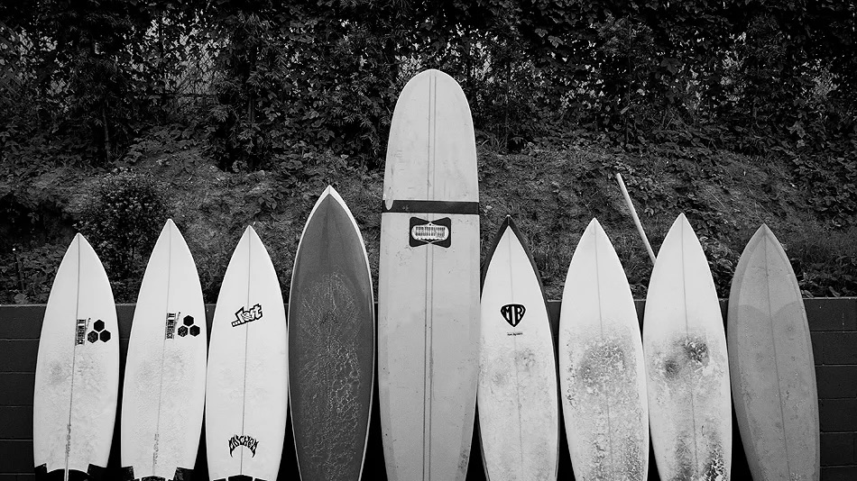

If you’re just starting out, you’re probably not going to be surfing shoulder to head-high perfect waves – at least you probably shouldn’t be unless you’re a bit of a masochist. The shortboard certainly looks cool, but if you’re just starting out, put it down. Beginner surfers will have an easier time sticking to mid-sized to longer surfboards with lots of volume – paddle power and float. Stick to smaller, rolling waves until you get comfortable with the mechanics of paddling, catching a wave, and popping up, as well as just balancing on the board in different circumstances.Once a beginner surfer can comfortable cover the basics, the spectrum of wave types and board choices open up.
Smaller, weaker waves will be most fun using a board with more volume and a flatter rocker. This combination will allow you to get into waves easily, glide and drive through slow, mushy sections, and build speed naturally. Some good choices here include a variety of longboards, mini-longboards, funboards, and fish. When the waves are smaller, but have some more vertical or pitchy sections to work, a groveler or small-sized hybrid will be your friend. You’ll still have the volume and planing surface to get through the slow stuff, but you’ll have a bit more maneuverability to work some sections that a bigger, fatter board wouldn’t allow.
Medium sized waves offer a good deal of versatility. You can really get away with surfing almost anything when the waves are good. As a general rule of thumb, waves that push or roll with a big open face would be fun on something with less rocker and a little more volume. But if you can stay in the pocket on waves like this, a shortboard can be fun too. Medium sized waves that are steep and fast require something with a bit more rocker and maneuverability.
Big waves require the right equipment to get the most out of them. It sort of comes full circle to small waves with some more volume, length, and rail line helping your board retain control and hold down big wave faces. When your go-to board can’t make the steeper, faster drops or when your go-to starts to feel squirrely and loose under your feet in bigger surf, it’s probably time to grab your step-up, semi-gun, or even a gun if conditions (and your experience level) demand it.